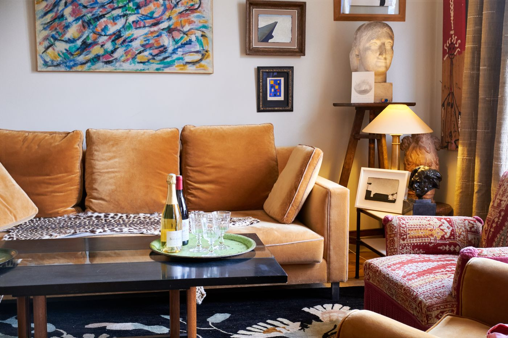
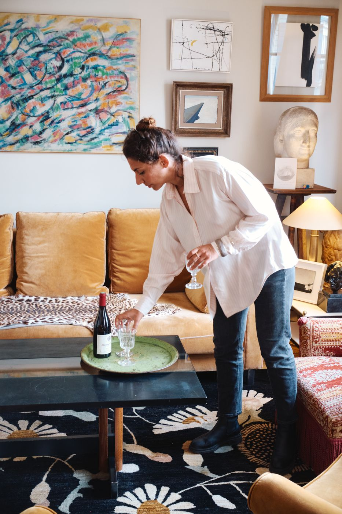

A Private Parisian Apéritif
French flavours, beautiful objects and the art of getting together.
A private apéritif in the living room of two Parisian art dealers and collectors, with Champagne, French delicacies and conversations about art and the traditions of French hospitality.
The Experience
The afternoon or evening begins with a glass of Champagne and an introduction to the apartment, its paintings, antiques and intriguing objects.
As you settle into the living room, Victoire shares a few stories behind the pieces and the people who collect them. There's room for curiosity, questions and conversation, without turning the occasion into a formal art lecture.
Then comes the apéritif itself: a generous selection of French cheeses, artisanal charcuterie, fresh bread and accompaniments, personally chosen for your gathering.
Over Champagne and wine, discover some of the customs of French entertaining, from the art of setting a table to the little rituals that make an apéritif such a cherished part of everyday life.
There is no formal wine or cheese tasting, no fixed script and no rush. Just a welcoming atmosphere, delicious food and the pleasure of spending time together.

A Possible Encounter with the Collectors
For guests particularly interested in art, the apartment's owners — Parisian gallery owners, antique dealers and collectors — may join the apéritif upon prior request, subject to their availability.
Personalise Your Apéritif
Exceptional products, such as caviar, rare Champagnes or prestigious wines, can be arranged upon request and quoted separately.
The experience may also be combined with a private gastronomic walk through Paris, with a personalised quotation.
Practical Details
- Duration: 2 hours
- Private experience for 2–6 guests
- Includes French cheeses, artisanal charcuterie, bread and accompaniments
- Champagne, wine and non-alcoholic beverages included
- From €780 for two guests
- Bespoke additions quoted separately